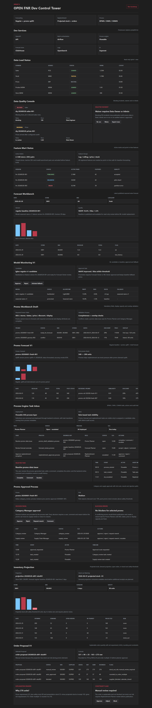

OPEN FNR Sprint 12: Order Proposal V1
Аннотация: тестируем преобразование projected stock в объяснимое предложение заказа: gross requirement, net requirement, safety stock, presentation stock, MOQ/rounding, constraint flags и статусы auto/manual/blocked.
Что тестируем
| Область | Что делаем | Зачем | Факт |
|---|---|---|---|
| Order proposal API | Открываем /replenishment/order-proposals/order-proposal-20260528-s001-sku001. |
Проверяем, что заказ объясним по компонентам формулы. | Explanation получен. |
| Net requirement | Считаем gross + safety + presentation - projected stock at receipt. | Это основа для заказа до округления. | 321 + 90 + 25 - 163 = 273. |
| MOQ and rounding | Применяем min order qty и order multiple. | Заказ должен соответствовать ограничениям поставщика. | 273 округлено до 276. |
| Routing | Проверяем auto_approved, manual_review и blocked. | Процесс должен маршрутизировать предложения по рискам и constraints. | Все три статуса проверены. |
UI-тестирование
- Открываем экран и находим блок
Order Proposal V1. - Проверяем карточку выбранного предложения.
- Проверяем формулу: gross, safety, presentation, projected stock, raw order.
- Проверяем таблицу proposal со статусами manual_review, auto_approved, blocked.
- Проверяем flags: stock_out_risk, rounded_to_order_multiple, supplier_blocked.
- Проверяем action panel: Approve, Adjust, Block.

Бизнес-процесс по шагам
| Шаг | Действие | Почему | Результат |
|---|---|---|---|
| 1 | BPMN стартует после публикации inventory projection. | Order proposal должен опираться на утвержденный projected stock. | Start event создан. |
| 2 | Считается gross requirement. | Нужно понимать спрос на период покрытия. | Gross layer присутствует. |
| 3 | Считается net requirement. | Учитываются safety, presentation и projected stock. | Net formula проверена. |
| 4 | DMN оценивает constraints. | Поставщик или календарь могут заблокировать заказ. | order_constraint_decision создан. |
| 5 | Применяются MOQ и rounding. | Заказ должен быть физически исполним поставщиком. | 273 -> 276. |
| 6 | DMN определяет auto/manual/blocked. | Planner подключается только при рисках или блокировках. | Routing проверен. |
Автоматические проверки
| Команда | Результат |
|---|---|
python -m pytest |
94 passed |
npm.cmd run build |
Frontend build completed |